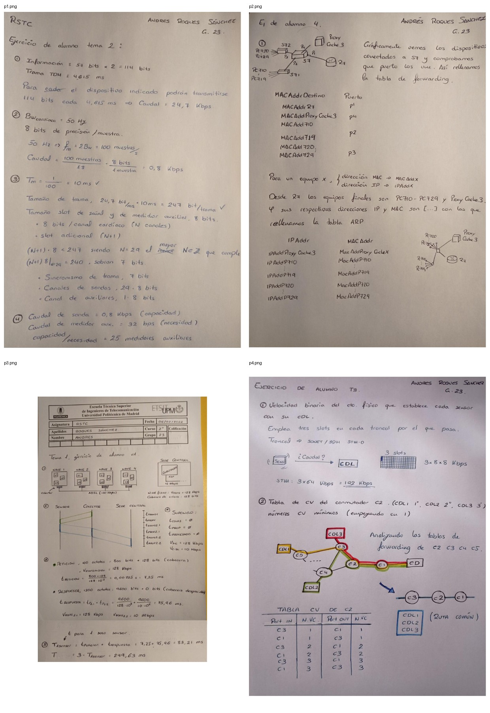

RSTC · 2021–2022 · Ejercicios aplicados
De la multiplexación al encaminamiento y los circuitos virtuales.
Colección de cuatro entregas resueltas a mano que recorren problemas básicos de dimensionado de tráfico, retardos, conmutación de nivel 2 y transporte de telecomunicaciones.
Estas hojas no se presentan como un gran proyecto, sino como evidencia de los fundamentos: transformar requisitos de tráfico en caudales, calcular retardos, razonar tablas de forwarding/ARP y seguir la jerarquía de transporte digital.
Contenido
Cuatro familias de problemas.
Multiplexación
Cálculo de tamaño de trama, frecuencia de muestreo, caudal y número de canales auxiliares.
Retardo extremo a extremo
Descomposición del tiempo de transmisión y propagación sobre varios tramos de red.
Ethernet y ARP
Construcción razonada de tablas de forwarding y correspondencias entre direcciones IP y MAC.
Transporte digital
Dimensionado de tributarios SONET/SDH y análisis de circuitos virtuales sobre una topología compartida.
Evidencia
Resolución manuscrita.

Entregables